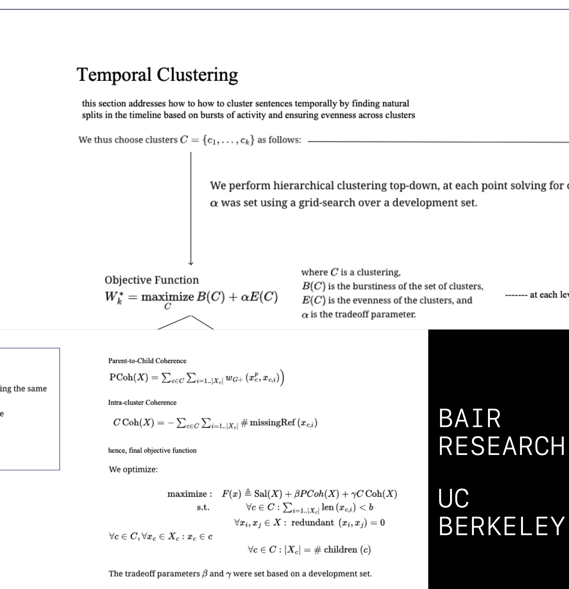
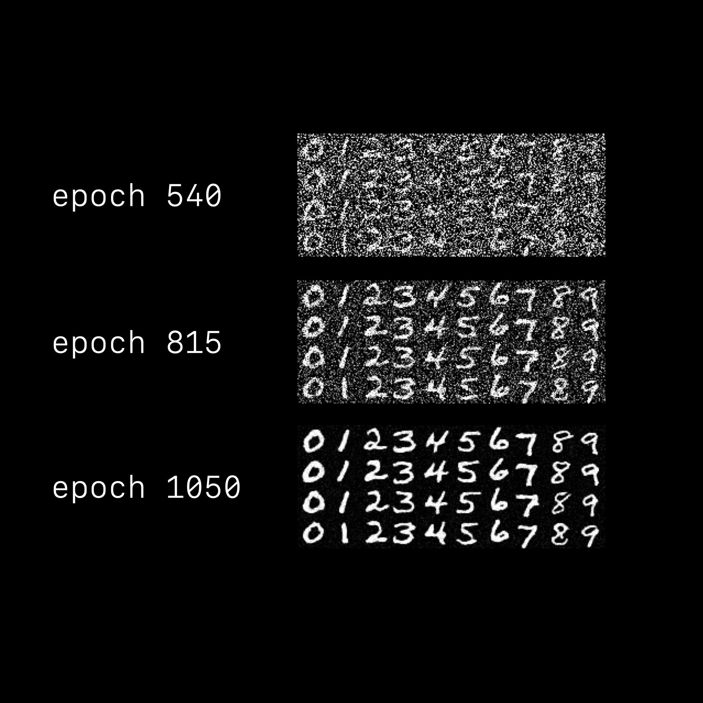

Advancing NLP with Hierarchical Summarization at UC Berkeley BAIR Research
I have recently embarked on research at UC Berkeley's Berkeley Artificial Intelligence Research (BAIR) lab, focusing on hierarchical summarization to enhance large language model (LLM) responses. My work includes contributing to the development and scaling of techniques outlined in the "Hierarchical Summarization: Scaling Up Multi-Document Summarization" paper. Currently, I am testing these methodologies with Herman Melville's Moby Dick to evaluate the model's ability to process and summarize complex, multi-chapter texts effectively. This involves refining algorithms for decomposing text into multi-level summaries, enabling more contextually aware and nuanced information retrieval. By implementing structured summarization strategies, I aim to address challenges in information overload and optimize the response quality of LLMs for complex queries. This research bridges cutting-edge NLP methodologies with practical applications in improving model interpretability and efficiency, contributing to the broader goals of AI accessibility and innovation.
Automated Stock Trading Program + OpenGL
I created a fully automated stock trading program using Python that combines economic models and machine learning to make trading decisions. The results are then visualized with OpenGL, showing the trades and market activity in an animated format. For more information and simple example please refer here.
IMPORTANT: To view the full 4k video sample directly, please refer here.
A simple raytraced sample can be found here.
Custom Debug/Programmable PCB Band Pass Filter
I extended the voice controlled car project from EECS16B and reimplemented the analog circuit on a custom 2 layer PCB with Altium and added digitally tunable resistors via a microcontroller for attenuation management and ADC modules so that the node voltages could be analyzed.
For more details the information can be found here.
I also rendered the two layers as an animation in openGL here.
CPU with Custom Datapath for FPGA and ASIC
Created a custom RISCV-32i compliant datapath that was implemented using AMD Xilinx SDK for FPGA and Vivado with the PYNQ-Z1. In this project I was able to create and design a 5 stage CPU with CPI of 1 and had a UART interface with the board over micro hdmi. Also created this custom RISCV-32i compliant datapath that was implemented on ASIC with the help of Cadence Design Systems and Synopsys and added a custom cache module to reduce total cycles when accessing SSD.
For more details the information can be found here.
The direct link to my cpu visualization is here. Feel free to change the running program on my design on the bottom left.
As I designed it with a perfect CPI the CPU will never miss a branch prediction.
Cadence Direct Mapped Cache via SRAM Cell

I designed and implemented a cache for a RISC-V processor as part of a VLSI design project. The cache serves to minimize latency by locally storing frequently accessed memory data, creating the illusion of a large, low-latency memory. My implementation followed the project specifications, which required a minimum 512-byte cache with 16-word (512-bit) cache lines, using SRAM macros for data and tag storage. As an EECS 151 student, I implemented a direct-mapped cache, which simplifies data storage and retrieval while providing efficient memory access for the processor. I designed a state machine to handle cache hits, misses, and memory transactions, supporting a write-back policy to manage dirty data efficiently. The cache interface adhered to the provided signals in Cache.v, enabling seamless integration with the processor and main memory. Additionally, I ensured that the cache could handle multiple cycles for memory transactions using the 128-bit memory interface. For testing, I ran benchmarks to compare performance with and without the cache. Using the bmark test suite, I observed the cycle counts for various benchmarks, noting a difference in performance between the cache-enabled and no-cache configurations. The final deliverables included the completed assembly tests, a detailed block diagram of the cache, an updated pipeline diagram reflecting the integration of the cache, and performance analysis based on benchmark results. This project provided valuable experience in designing and testing memory subsystems within an ASIC pipeline.
Independent Researcher | Compiler Development for RISC-V Visualization
Designed and implemented a custom compiler to convert RISC-V binary machine code back into assembly language as part of an independent project. This tool was developed to enable detailed visualization of CPU pipeline execution, providing insights into instruction flow and data processing. Leveraged the compiler to decode binary instructions and map them accurately to corresponding assembly-level representations, ensuring compatibility with standard RISC-V ISA formats.
Utilized this reverse-engineered assembly output to create a dynamic visualization of the CPU pipeline, highlighting instruction execution stages, data dependencies, and control flow. The project facilitated a deeper understanding of pipeline behavior and performance optimization, while demonstrating practical skills in low-level systems programming, RISC-V architecture, and computer graphics integration.
Top Kaggle Performance CS189
During this course, I devoted considerable effort to the assignments and was able to place highly on the Kaggle leaderboards in several competitive tasks.
MNIST Classification with SVMs (HW1): Tied for 5th place with an accuracy of 0.991.
MNIST Classification with Gaussian Discriminant Analysis (HW3): Placed 2nd with an accuracy of 0.972.
Spam Classification with Gaussian Discriminant Analysis (HW3): Ranked 11th with an accuracy of 0.958.
Wine Classification with Logistic Regression (HW4): Tied for 1st place with an accuracy of 0.997.
For more details the class, information can be found here.
Student Researcher | Deep Learning for Visual Data | Directed Group Study
Machine Learning @ Berkeley
Participated in an advanced group study, Deep Learning for Visual Data, offered by the EECS department, with a focus on computer vision systems. Acquired expertise in neural network architectures such as convolutional neural networks (CNNs), recurrent neural networks (RNNs), and transformers, tackling tasks like image classification, object detection, semantic segmentation, and generative modeling. Leveraged state-of-the-art techniques including self-supervised learning, transfer learning, attention mechanisms, and multimodal fusion, while implementing models with frameworks like TensorFlow and PyTorch.
Engaged actively with Machine Learning @ Berkeley (ML@B), contributing to the organization’s initiatives in advancing opportunities and education in machine learning. Participated in collaborative efforts across research, industry partnerships, and educational outreach, fostering innovation and making machine learning accessible to broader audiences.
The organization homepage can be found here for more information.
The course homepage can be found here for more information.
Reinforcement Learning Self Driving Car in Unreal Engine
UC Berkeley ROAR Research
As part of the Berkeley ROAR (Real-time Open AI Robotics) decal, I developed a Reinforcement Learning Self-Driving Car system simulated in Unreal Engine, integrating reinforcement learning, computer vision, and LiDAR-based object detection. This project focused on creating an autonomous driving pipeline capable of navigating complex environments with dynamic obstacles and road challenges. Using reinforcement learning algorithms such as Deep Deterministic Policy Gradient (DDPG) or Proximal Policy Optimization (PPO), the car optimized its driving policy by interacting with the simulated environment and receiving feedback through a reward-based system. The computer vision module employed convolutional neural networks (CNNs) to process visual data from in-game cameras, identifying lane markings, traffic signs, and other road features critical for navigation. Simultaneously, a LiDAR-based perception system mapped the surroundings in real-time, enabling precise object detection, collision avoidance, and localization. Unreal Engine provided a high-fidelity simulation environment, closely mimicking real-world driving conditions, which enhanced the training and testing of the system. By combining these technologies, the car demonstrated efficient navigation through various traffic scenarios, balancing speed, safety, and efficiency. This project provided a comprehensive understanding of integrating reinforcement learning with sensor data processing in simulated environments, offering valuable insights into autonomous vehicle development.
A video demo can be found here.
The official UC Berkeley ROAR website can be found here.
Student Researcher | Fundamentals of Blockchain Technology | Directed Group Study
Blockchain at Berkeley
Participated in an advanced group study exploring the technological and economic foundations of blockchain and cryptocurrency through the Blockchain Fundamentals DeCal offered by the EECS department. Gained a comprehensive understanding of blockchain systems, including proof-of-work (PoW), proof-of-stake (PoS), Byzantine fault tolerance (BFT), elliptic curve cryptography (ECC), decentralized applications (DApps), smart contract execution, Merkle trees, hash functions, and distributed ledger technology (DLT). Explored key economic principles such as tokenomics, digital currency valuation, supply and demand dynamics in blockchain ecosystems, incentive structures, market liquidity, and the role of cryptocurrencies in modern financial systems. Developed critical skills to evaluate diverse narratives surrounding blockchain technology and its intersection with economics, forming an informed perspective on its potential to reshape financial markets, monetary policy, and global trade systems.
The course homepage can be found here for more information.
Corporate Finance Statement Analysis
CASE STUDY: RIVIAN
Completed an in-depth study of corporate finance sponsored by UC Berkeley's Haas School of Business. Acquired a robust understanding of business valuation methods, including Discounted Cash Flow (DCF), valuation by comparable firms, financial metrics, and real options analysis. Developed expertise in analyzing earnings quality, cost of capital, terminal values, and sensitivity analysis. Applied financial modeling techniques using tools like MS Excel to solve real-world corporate finance problems.
Conducted a detailed financial analysis of Rivian Automotive, focusing on its borrowing patterns and the sustainability of its capital structure. Investigated key challenges, including high levels of debt financing, cash burn rate, and potential impacts on long-term growth. Synthesized insights from financial reports and recent news, identifying corporate finance risks related to Rivian's ability to balance aggressive investment in innovation with financial stability. Formulated recommendations for managing borrowing levels and improving financial health to enhance shareholder value.
Comprehensive Technical Documentation of the RV32I RISC-V Instruction Set Architecture with Practical Examples and Pseudo-Instructions
This document serves as a comprehensive resource for understanding and organizing the RV32I RISC-V instruction set architecture (ISA). It is the culmination of my research into the foundational aspects of RISC-V, emphasizing clarity and accessibility for students, developers, and enthusiasts alike. The documentation delves into the details of individual instructions, their formats, names, translations, code examples, and descriptions of their operations. It meticulously explains both base integer instructions and common extensions, such as the multiply and divide instructions from the RV32M extension. Additionally, it includes pseudo-instructions and directives to cover the broader RISC-V programming ecosystem. By illustrating each instruction with practical code snippets and clear explanations, the document bridges the gap between theoretical knowledge and practical implementation. This project reflects my commitment to not only mastering the RISC-V ISA but also contributing to the field by providing a well-structured, educational tool for anyone learning or working with RISC-V systems.
The document can be found here.
IEEE + UC BERKELEY IEEE Member
Active member of the Institute of Electrical and Electronics Engineers (IEEE) and UC Berkeley IEEE, contributing to the advancement of cutting-edge technologies and global standards. Proficient in C programming language with a focus on developing efficient, standards-compliant solutions. Engaged in fostering innovation, collaboration, and technical excellence through participation in IEEE activities and initiatives.
The homepage for IEEE can be found here for more information.
The homepage for UC Berkeley IEEE can be found here for more information.
UC BERKELEY IEEE HOPE | Directed Group Study
Gained hands-on experience with PCB design and manufacturing through the HOPE (Hands-On Practical Electronics) program, focusing on practical applications of electronics in real-world scenarios. Enhanced skills in PCB layout, component selection, and circuit debugging while working on projects that emphasized design for manufacturability and assembly. Engaged with IEEE HOPE DeCal instructors to seek expert advice on PCB manufacturing and assembly processes, which proved instrumental in designing and producing my first custom PCB. This experience deepened my understanding of electronic systems and provided a solid foundation for future projects in hardware development.
The homepage can be found here for more information.
ANSI and ISO Member | C Programming
Active member of the American National Standards Institute (ANSI) and the International Organization for Standardization (ISO), contributing to the development and adoption of global standards. Proficient in C programming language with a focus on creating efficient, standards-compliant code. Dedicated to fostering interoperability, quality, and innovation through adherence to internationally recognized guidelines and practices.
The homepage can be found here for more information.
Student Researcher and Linux System Administrator | Directed Group Study
Gained hands-on experience in administering Linux-based server environments modeled after the EECS Instructional Servers (hivexx.cs.b.e) and the Open Computing Facility (tsunami.ocf.b.e). Developed comprehensive knowledge of GNU/Linux systems, including the interaction of key components such as init, filesystems, services, and daemons. Acquired skills in basic networking, system security maintenance, and system administration essentials, with practical exposure to tasks and challenges faced by system administrators in industry.
The course homepage can be found here for more information.
The OCF homepage can be found here for more information.
Independent Researcher | The Chinese Economy and Development
Conducted independent research on the evolution and success of the Chinese economy, exploring its historical trajectory and the factors contributing to the "China Model." Analyzed how geographic, political, and institutional reforms shaped China’s economic transformation, using frameworks rooted in economic history and growth theory. Examined the role of central planning, the reform process, and structural changes, focusing on sectors such as agriculture, state-owned enterprises, and foreign trade.
Studied the mechanisms that enabled China to achieve rapid industrialization and sustained economic growth, including its approach to population management, labor markets, income distribution, and financial sector development. Explored the integration of China into the global economy, assessing its trade policies and foreign investment strategies. Synthesized data from contemporary sources and historical records to understand the unique combination of market-driven incentives and state control that underpins the Chinese economic model. This research provided insights into both the successes and challenges faced by China in adapting its economy to the demands of the 21st century.
Image generated symbolizing Deng Xiaoping’s metaphor, “We had to fill the river with stones before we could cross it,” representing China's transition from a centrally planned economy to a market-based economy. This gradual, pragmatic approach allowed China to experiment with reforms, adapt to challenges, and ensure stability during its economic transformation.
Applying Machine Learning to Econometric Research with Tamer Çetin
Under the guidance of Professor Tamer Çetin, I extended the analysis in the seminal paper by Angrist and Krueger, Does Compulsory School Attendance Affect Schooling and Earnings?, by integrating machine learning (ML) techniques into the instrumental variable (IV) model framework. The original study examined the causal effect of compulsory schooling laws on earnings using quarter-of-birth as an instrument. I enhanced this econometric approach by implementing ML models to predict and analyze the variation introduced by the instrument, exploring how non-linear patterns and interactions in the data influence the results. This included deploying tree-based methods like Random Forests and Gradient Boosting for variable importance and prediction accuracy while comparing these insights with traditional IV regression outcomes. The project highlights the potential for ML tools to complement classical econometric techniques, enabling richer policy insights and more robust causal inference in economic research.
Designed and Implemented Operating System: PINTOS
pintOS User Programs
In the User Programs project, our group implemented key system call functionalities for argument passing, process control, file operations, and floating-point operations. Argument passing was fully implemented before our design document was created, ensuring a seamless setup of arguments on the stack for user programs. For process control syscalls such as exec and wait, we revised the synchronization mechanism by introducing shared data structures (wait_data) containing semaphores for synchronization, ensuring precise control over process states. We redesigned the process creation flow by distinguishing between threads and processes, modifying structures like struct thread and struct process to align with this distinction. File operation syscalls were completed prior to the design document, and floating-point operations required adjustments to ensure stack alignment and proper FPU state handling, addressing nuanced issues in assembly and context switching. Reflection on this project highlighted the importance of clear task delegation and early communication within the group. Debugging was a collaborative effort, and although we faced challenges with floating-point operations and process control, we improved our synchronization and scheduling mechanisms significantly. Writing comprehensive test cases taught us to anticipate edge cases, which clarified our understanding of system call behavior and the Pintos kernel.
The document can be found here for more information.
Designed and Implemented Operating System
pintOS Threads

The Threads project extended Pintos to include advanced thread scheduling, synchronization, and user-level threading capabilities. For the Efficient Alarm Clock, we modified struct thread to include a timer_elem field, ensuring that threads could be managed separately in the sleeping list without interfering with synchronization structures. In the Strict Priority Scheduler, we introduced a lock priority comparator to resolve thread priorities when acquiring locks, using sched_elem in struct thread to maintain an efficient ready queue. The User Threads section involved implementing a pthread library and system calls for thread management, synchronization, and stack handling. Our design iterated significantly, emphasizing modularity and careful management of kernel and user pages. For instance, we optimized pthread_exit to avoid busy-waiting by joining all threads explicitly, improving performance and clarity. The design challenges revolved around memory alignment, argument sanitization, and ensuring compatibility across various syscall implementations. Key optimizations included consolidating redundant structures, such as replacing PCB-level thread lists with join-specific data, and improving argument passing mechanisms for stack consistency. Testing for Threads focused on edge cases, such as priority re-donation, and revealed the importance of implementing correct scheduling policies. Writing test cases reinforced our understanding of priority inversion scenarios and how scheduling policies could mitigate or exacerbate such issues.
The document can be found here for more information.
Designed and Implemented Operating System
pintOS File System
The File Systems project introduced a deeper level of complexity, combining tasks related to buffer caching, extensible files, and subdirectory management. For the Buffer Cache, we transitioned from a global filesystem lock to a granular locking mechanism, enabling better concurrency by allowing multiple threads to access different cache entries simultaneously. The cache structure was redesigned to include struct buffer_cache_entry and struct buffer_cache, facilitating efficient implementation of an LRU eviction policy using a global_tick counter and tick_lock. Cache initialization and cleanup routines were enhanced to ensure consistency and data integrity, particularly for flushing dirty entries during shutdown. In Extensible Files, our design revolved around managing inode resizing with direct, indirect, and double-indirect pointers. We optimized inode_resize with helper functions for granular functionality and synchronized free map updates across all file operations. The design required adjustments for persistent inode locks and handling edge cases for dynamic file resizing during concurrent operations. Rebasing our implementation to the skeleton code provided a more stable foundation for integrating subdirectory and caching features. For Subdirectories, we introduced an is_dir flag and parent pointer in struct inode_disk, streamlining directory-specific operations. The path_resolve function was modified to return both the directory and file inode, accommodating edge cases like symlinks and invalid paths. Synchronization mechanisms ensured safe concurrent access to shared directory structures, maintaining data integrity. This project was particularly challenging due to the need for integrating multiple components while handling concurrency. Testing emphasized cache efficiency, with tests like cache-hit-rate and cache-coalesce verifying the correctness of our buffer cache implementation under various workloads. Writing these tests taught us to consider system-wide implications, such as ensuring proper synchronization and minimizing contention for shared resources.
The document can be found here for more information.
Reinforcement Learning Pacman Agent
I implemented and explored fundamental concepts of reinforcement learning by developing agents capable of solving various tasks. I focused on value iteration and Q-learning algorithms to compute optimal policies for Markov Decision Processes (MDPs). I tested these implementations across diverse environments, including Gridworld, a simple environment for evaluating reinforcement learning methods; Crawler, a simulated robotic controller; and Pacman, a dynamic and complex game setting. Through this project, I gained hands-on experience in designing agents that learn from their environment, make decisions under uncertainty, and adapt their behavior to achieve specific objectives.
Custom Neural Radiance Field
I explored the concept of representing 2D and 3D spaces using neural fields, with a focus on reconstructing images and rendering scenes through advanced deep learning techniques. In Part 1, I implemented a neural field to fit a 2D image by creating a Multi-Layer Perceptron (MLP) with sinusoidal positional encoding. The network took 2D pixel coordinates as input and output 3D pixel colors. I optimized the model using mean squared error (MSE) loss and trained it with an Adam optimizer, experimenting with hyperparameter tuning to evaluate performance improvements. This part provided hands-on experience with training data sampling, loss functions, and reconstruction metrics like PSNR. In Part 2, I extended the work to a 3D NeRF by training the network to represent a 3D scene from multi-view images. This involved implementing ray tracing through camera transformations, sampling points along rays, and applying a volume rendering equation to reconstruct the scene. The network was adapted to predict densities and colors in 3D space, leveraging positional encoding and deeper network architectures. I visualized rays, samples, and rendered images during training and achieved high-quality results for rendering novel views of the Lego scene. Through this project, I gained an in-depth understanding of neural radiance fields and their applications in computer vision and graphics.
Custom Stable Diffusion Models
I implemented and trained a diffusion model on the MNIST dataset as the foundation for a larger project. This involved building and training a single-step denoising UNet, a key component for solving image denoising tasks. The UNet architecture utilized downsampling and upsampling blocks with skip connections, enabling the model to reconstruct clean images from noisy inputs. I implemented these operations using PyTorch, designing custom layers such as convolutional, downsampling, and upsampling blocks. The denoising process optimized an L2 loss to train the UNet, where the model learned to map noisy images to their clean counterparts. To create training data, I generated noisy-clean image pairs using a controlled noising process and visualized the effects of different noise levels to understand the model's performance. This challenging project provided hands-on experience in building and training diffusion models, laying the groundwork for more advanced applications in generative modeling.
For more details the information can be found here.
Colorizing the Prokudin-Gorskii Photo Collection: A Computational Approach

In this project, I developed an automated image processing pipeline to restore and align color photographs from Sergei Mikhailovich Prokudin-Gorskii's early 20th-century glass plate negatives. Each glass plate contained three separate exposures captured through red, green, and blue filters. My task involved dividing these plates into their respective color channels and aligning them to produce a cohesive RGB image. Starting with a naive brute-force alignment using metrics such as the L2 norm and normalized cross-correlation, I extended the approach to handle high-resolution images efficiently through an image pyramid. This hierarchical technique processed the images at multiple scales, progressively refining alignment estimates to optimize computational performance while maintaining accuracy. Beyond alignment, I explored advanced post-processing techniques to enhance image quality. This included automatic cropping to remove misaligned borders, contrast adjustments through intensity rescaling, and white balance corrections to neutralize color casts. Additionally, I implemented better color mapping strategies to approximate more realistic tones and experimented with edge-based alignment metrics for improved robustness. The results demonstrated clear improvements in visual fidelity, showcasing the potential for computational methods to revive historical photography. My implementation emphasized efficiency, producing aligned images within seconds for smaller resolutions and under a minute for large-scale scans.
For more details the information can be found here.
Exploring Image Processing Techniques: Filters, Frequencies, and Blending

In this project, I implemented a variety of foundational and advanced image processing techniques to explore the interplay of filters, frequency domains, and blending. The journey began with finite difference operators to compute gradients and edge detection. By extending this to the Derivative of Gaussian (DoG) filter, I reduced noise while preserving meaningful edges, showcasing the power of combining spatial and frequency domain techniques. For frequency manipulation, I utilized unsharp masking to sharpen images, isolating high-frequency details and amplifying them for enhanced clarity. This method was applied to blurry images and their sharpened counterparts to evaluate the preservation of detail. Further, I explored hybrid images inspired by the SIGGRAPH 2006 paper, blending high-frequency details of one image with the low-frequency features of another to create compelling visuals that shift perception with distance. The project culminated in multiresolution blending, implementing Gaussian and Laplacian stacks to seamlessly combine images. Using both vertical and irregular masks, I created smooth transitions between images, such as blending an apple with an orange and experimenting with creative compositions. An extension of this technique was used to transfer a tattoo from one subject to another, specifically moving a tattoo from a woman’s back onto a man without a tattoo. This demonstrated the versatility of the techniques in real-world applications like photo editing and creative visualization. The insights gained from this project underscored the transformative potential of combining spatial and frequency domain methods, offering a deeper understanding of image processing concepts and their practical applications.
For more details the information can be found here.
Face Morphing: Blending Shapes and Features Through Image Transformation
In this project, I explored the intricate process of face morphing, which combines simultaneous warping of image shapes and cross-dissolving of image colors. This technique was applied to create smooth transitions between two faces, compute the average face of a population, and generate personalized caricatures. The journey began with defining correspondences between two facial images by identifying key points for features like eyes, nose, and mouth. These points were triangulated to create a mesh that controlled the shape warping. To simplify this process and increase efficiency, I extended the project by leveraging a machine learning model to automatically detect facial landmarks, eliminating the need for manual point selection. The next step was computing a "midway face" by averaging the key points of two images and warping both faces into this average shape. Using affine transformations for each triangle in the triangulation, I achieved a blend that showcased the combined features of both faces. The morphing sequence was then implemented by interpolating shape warping and cross-dissolving across a series of frames, producing a smooth transition from one face to another. Beyond individual morphs, I used annotated datasets to calculate the mean face of a population. This involved warping each face in the dataset into the average geometry, displaying examples, and deriving the average face. Additionally, I transformed my own face into the average population geometry and vice versa, providing a comparative analysis of facial structures. Caricature generation was another highlight of this project. By extrapolating beyond the population mean, I exaggerated distinct facial features, creating caricatures that emphasized unique characteristics. Extending this, I explored bells and whistles like altering age and gender through morphing, experimenting with morphing music videos, and utilizing PCA to transform faces within a reduced-dimensional space for innovative results. This project demonstrated the power of combining geometry, image processing, and machine learning to manipulate and analyze facial images. The automation of keypoint selection through machine learning significantly enhanced efficiency and provided a foundation for further applications in facial recognition, animation, and digital art.
For more details the information can be found here.
Image Warping and Mosaicing with Advanced Video Stabilization and Stitching
In this project, I explored image warping and mosaicing, progressing from static image stitching to advanced video mosaics. Starting with manual correspondence-based homography recovery, I computed transformations to warp images into alignment and created seamless mosaics using weighted averaging and Laplacian pyramids for smooth blending. I validated my pipeline with image rectification tasks, transforming skewed regions into geometrically accurate perspectives. To automate the process, I implemented feature-based autostitching using Harris corner detection, Adaptive Non-Maximal Suppression, normalized feature descriptors, and Lowe's ratio test for matching, with robust homography estimation via RANSAC. This enabled automatic alignment and stitching of images into cohesive mosaics, achieving results comparable to manual methods. Extending the approach, I tackled video mosaicing, processing four overlapping 4K videos with frame-to-frame homographies and stabilization algorithms to address motion and jitter, producing a stabilized high-resolution panoramic video mosaic. This project bridged foundational image processing with dynamic, large-scale applications, showcasing the scalability and robustness of these techniques.
For more details the information can be found here.
Visualizing Gradient Ascent in 3D Vector Spaces with Raytracing
In this project, I explored the mathematical intricacies of gradient ascent by visualizing optimization trajectories in a 3D vector space using raytracing techniques. Gradient ascent, a cornerstone of optimization, iteratively adjusts parameters to maximize a given function by moving in the direction of the gradient. I rendered a dynamic representation of the optimization process, illustrating the gradient vector fields, the curvature of the objective function's surface, and the paths taken by hypothetical agents as they ascend to local or global maxima. Using raytracing, I highlighted the interplay between the function's Hessian (capturing local curvature) and the gradient's magnitude and direction, providing an intuitive yet mathematically rigorous perspective on convergence behaviors in high-dimensional spaces. The visuals emphasized the role of step size and initialization in optimization, making abstract mathematical concepts accessible through vivid, raytraced renderings that combined aesthetics with analytical depth.
A simple raytraced sample can be found here.
Traders at UC Berkeley, EECS Finance Research
Traders at Berkeley is a student-driven organization dedicated to advancing knowledge and opportunities in quantitative finance. The group hosts flagship events like the annual Berkeley Trading Competition and Berkeley Trading Invitational, attracting top students and industry professionals. It offers educational initiatives such as the Introduction to Quantitative Finance DeCal, which equips students with practical trading and research skills. Traders at Berkeley fosters professional growth by organizing networking events and job fairs, connecting students with leading quantitative finance firms. Having attended several events hosted by Traders at Berkeley, I gained exposure to the world of quantitative finance, participated in discussions with industry professionals, and deepened my understanding of applied quantitative concepts and market dynamics. Through its competitions, courses, and community-building efforts, the organization supports students in achieving their academic and career aspirations in the quantitative finance space.
The homepage can be found here for more information.
Berkeley Investment Group, Economics Investment Research
Berkeley Investment Group (BIG) is UC Berkeley's oldest and premier undergraduate investment fund, established in 1997. BIG provides students with a unique opportunity to learn the skills necessary to become value investors through hands-on portfolio management, educational programs, and exclusive networking opportunities. As a member of the group, I attended several events and engaged with industry professionals, gaining insights into investment strategies and the rigorous financial analysis required for successful value investing. The organization focuses on generating risk-adjusted returns by identifying fundamentally undervalued companies, emphasizing stocks with asymmetric returns—high potential upside and low potential downside. BIG’s approach combines rigorous fundamental analysis and financial modeling, with over $130,000 in assets under management. Through its intern program and mentorship opportunities, BIG prepares students for success in the competitive finance world, with a strong track record of placements in top firms such as Citadel, Point72, and Temasek.
The homepage can be found here for more information.
Five Stage Pipeline Data-path Hazards with Control Logic Design Document
Designed and implemented a detailed five-stage pipeline datapath to simulate and analyze the behavior of a RISC-V processor, addressing common data hazards and control flow challenges. The project incorporated forwarding logic and stalling mechanisms (using NOPs) to resolve hazards, ensuring correct execution of instructions without compromising performance. A comprehensive control unit was developed to manage pipeline operations and mitigate issues such as data dependencies, branch prediction, and load-use delays.
The pipeline was visualized with a detailed diagram showcasing instruction fetch, decode, execute, memory access, and write-back stages, along with the control and data flow connections. This project demonstrated a deep understanding of CPU architecture, control logic, and optimization techniques for hazard resolution, providing insights into real-world processor design challenges and solutions.
The document can be found here for more information. It is large so make sure to zoom.
AI-Powered Flappy Bird: A Playable Game and Perfect AI Player
This project involved developing a Flappy Bird-inspired game where players could either enjoy the classic experience or witness a flawless AI mastering the game. Using reinforcement learning, I trained an AI agent to achieve perfect gameplay by optimizing its actions through trial-and-error within a simulated environment. The AI employed a Q-learning-based algorithm to balance risk and reward, adapting to changing obstacles with pixel-perfect precision. For visualization, I integrated real-time updates of the AI's decision-making process, showcasing its evolving strategy as it learns. The project combined game design with artificial intelligence, offering both an interactive experience for users and a demonstration of AI's capability to achieve optimal performance in dynamic systems.
A simple video demo can be found here.